A0 · 全章地图与第 7 章承接
我们走到哪一步了？
第 6 章（语法层） 第 7 章（语义层） 第 8 章（本章） 第 9 章及以后 ───────────── ───────────── ───────────── ───────────── 字母表 / 项 / 公式 结构 𝕄=(M,I) / 赋值 σ 替换引理 形式推演系统 自由 / 约束变元 解释 t_M[σ], A_M[σ] (Lemma 3.24, 3.25) 一阶 G' 类系统 项替换 s[t/x] 可满足 / 永真 变量捕获的语义证据 ⊢ 与 ⊨ 的桥 公式替换 A[t/x] Γ ⊨ A 可靠性 / 完备性 变量捕获 + 改名规则 逻辑等价 ≃ / 等值替换
一句话定位
第 6 章我们在「符号串」上定义了句法替换 A[t/x]；第 7 章我们在「数学结构」上定义了赋值 σ 和它的修改 σ[x:=a]。第 8 章要做的事，就是把这两件看似很像、定义却完全独立的东西，正式钉死它们是等价的。这是从「语法操作」过渡到「语义证明」的最后一块拼图。
为什么这件事不平凡
- 句法替换
A[t/x]是在 符号串上 做文章——拿剪刀和胶水，把 A 里出现x的位置换成项t的符号串。 - 语义修改
σ[x:=t_M[σ]]是在 函数 σ 上 做文章——不动公式 A，只是把赋值函数在x这一点的值改成t解释出来的那个元素。 - 两件事的载体、操作方式都不一样。它们的结果碰巧总相等，需要证明。
接下来两条主角
| 引理 3.24（项版本） | 引理 3.25（公式版本） | |
|---|---|---|
| 对象 | 项 t | 公式 A |
| 等式 | (t[s/x])_M[σ] = t_M[σ[x:=s_M[σ]]] | (A[t/x])_M[σ] = A_M[σ[x:=t_M[σ]]] |
| 证法 | 对项 t 结构归纳 | 对公式 A 结构归纳，分 7 情况 |
| 难点 | 无；机械展开 | 量词分 3 子情况，对应改名规则 |
A1 · 动机：为什么需要替换引理
目标场景：全称消去
设 ∀x. (x+0 ≐ x) 在算术结构 𝒩 里为真（这是「加零不变」公理）。直觉上我们想说：「既然对所有 x 都成立，那把 x 换成具体项 S(y)·S(y)（即 (y+1)²）也成立」：
后者就是 A[t/x] 的形式，其中 A 是 x+0 ≐ x，t 是 S(y)·S(y)。
这一步语义上要怎么说清楚？
∀x.A在 (𝒩, σ) 下为真 = 对任意a ∈ N，A_𝒩[σ[x:=a]] = T。- 而我们想要
A[t/x]为真——这是「把 t 句法上代进去再解释」。 ∀x.A那条只能直接给我们「把任意元素 a 直接塞给 x 解释 A」。
要让这两件事对得上，就需要这么一条断言：
写成符号：(A[t/x])_M[σ] = A_M[σ[x := t_M[σ]]]。这就是引理 3.25。
1. 封面
「一阶逻辑（三）」标题页，无内容。下一节正式进入「项的替换（复习）」。
2. 项的替换（复习）
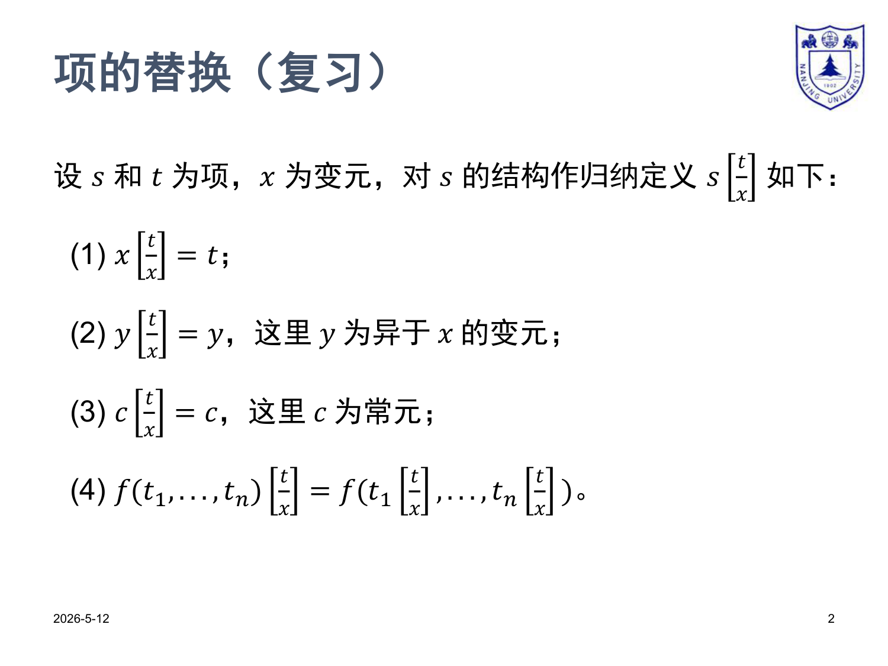
复述：s[t/x] 是什么
「在项 s 中，把所有出现的变元 x 换成项 t」。对 s 的结构归纳定义 4 条：
| 规则 | 形式 | 白话 |
|---|---|---|
| (1) | x[t/x] = t | 命中要换的变元 → 就换 |
| (2) | y[t/x] = y（y ≠ x） | 不是要换的变元 → 不动 |
| (3) | c[t/x] = c | 常元 → 不动 |
| (4) | f(t₁,…,tₙ)[t/x] = f(t₁[t/x],…,tₙ[t/x]) | 钻进函数应用，逐分量替换 |
算术语言 𝒜 的最小例子
计算 (S(x+y))[S(0)/x]：
(S(x+y))[S(0)/x] = S( (x+y)[S(0)/x] ) 规则 (4)，钻进 S = S( x[S(0)/x] + y[S(0)/x] ) 规则 (4)，钻进 + = S( S(0) + y ) 规则 (1) 命中 x；规则 (2) 跳过 y
变量捕获是公式（带量词）才有的烦恼。
3–4. 公式的替换（复习）
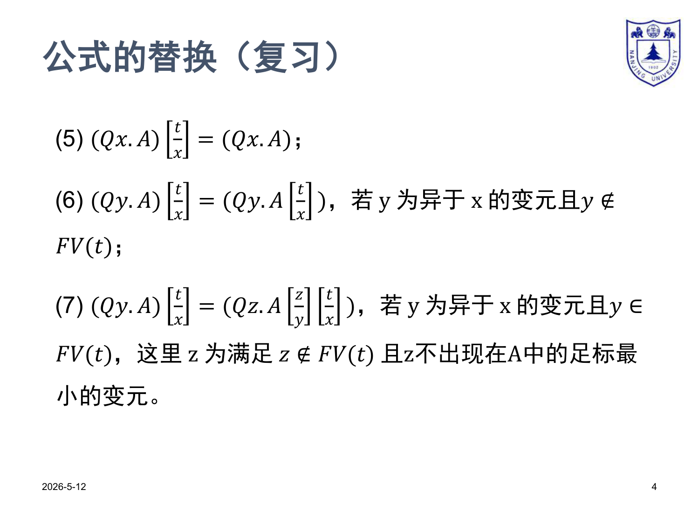
前 4 条（原子 + 命题联结词）
和项替换思路一样，钻进去逐个替换：
| 规则 | 形式 | 说明 |
|---|---|---|
| (1) | (t₁ ≐ t₂)[t/x] = (t₁[t/x] ≐ t₂[t/x]) | 等词原子，左右分别替换 |
| (2) | R(t₁,…,tₙ)[t/x] = R(t₁[t/x],…,tₙ[t/x]) | 关系原子 |
| (3) | (¬A)[t/x] = ¬(A[t/x]) | 钻进否定 |
| (4) | (A * B)[t/x] = (A[t/x]) * (B[t/x]) | * 取 ∧/∨/→，钻进二元联结词 |
后 3 条（量词）—— 真正的麻烦
Q 取 ∀ 或 ∃：
| 规则 | 条件 | 定义 | 直觉 |
|---|---|---|---|
| (5) | 绑变元就是 x | (Qx.A)[t/x] = Qx.A | x 已被 Qx 绑死，外面的替换够不着 |
| (6) | y ≠ x 且 y ∉ FV(t) | (Qy.A)[t/x] = Qy.(A[t/x]) | 绑的是别的变元、t 里没 y → 安全，直接钻进去 |
| (7) | y ≠ x 且 y ∈ FV(t) | (Qy.A)[t/x] = Qz.(A[z/y][t/x])z 是 ∉ FV(t) 且不在 A 中的最小新变元 | 必须改名，否则 t 里的自由 y 会被外层 Qy「捕获」 |
反例：
A = ∀y.(x < y)、t = y。若不改名直接套规则 (6)：
(∀y.x<y)[y/x] = ∀y.(y<y) ——把原本"对所有 y，x 都比 y 小"扭曲成了"对所有 y，y 都比自己小"。原来自由的 y 被 ∀y 抓走了。B0 · 句法替换 A[t/x] vs 语义修改 σ[x:=a]
这是整章最容易混的地方。后面所有证明都在这两个东西之间穿梭，先画清楚再继续。
| 维度 | 句法替换 A[t/x] | 语义修改 σ[x := a] |
|---|---|---|
| 作用对象 | 公式（符号串） | 赋值（函数 V → M） |
| 是个什么东西 | 又一个公式（新符号串） | 又一个赋值（新函数） |
| 怎么"算" | 按 7 条句法规则递归剪贴 | 在 x 这一点改取 a，其它不变 |
| 里面的 t / a | t 是一个项（符号） | a 是一个论域元素（数学对象） |
| 会"捕获"吗 | 会——所以需要规则 (7) 改名 | 不会——函数修改没有"捕获"概念 |
| 典型用法 | 表达「把符号 x 换成项 t」 | 表达「解释时把 x 临时设为元素 a」 |
| 何时被定义 | 第 6 章语法层 | 第 7 章语义层（处理 ∀/∃ 时用） |
桥
引理 3.24 / 3.25 说的是——「句法替换后再解释」恰好等于「先把那个项解释成具体元素 a，再用语义修改塞给 x」。两条路径殊途同归：
┌──── 句法替换 ────┐
│ │
A ─────────┤ ├───── 同一个真值 / 同一个元素
│ │
└──── 语义修改 ────┘
↑
（t 先解释成 a = t_M[σ]）
5–6. 替换引理 · 项版本（引理 3.24）
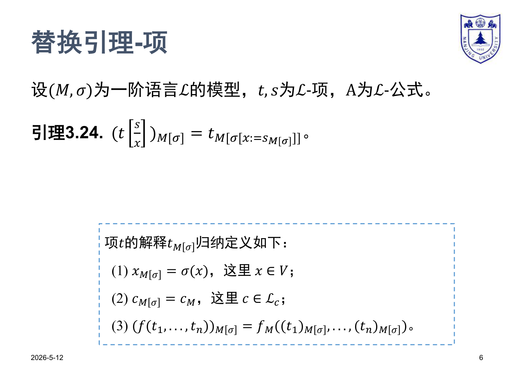
引理 3.24
设 (𝕄, σ) 为 ℒ-模型，t, s 为 ℒ-项，则
白话：
左边——先把项 t 里的 x 换成 s（句法），再在 (𝕄, σ) 下算值。
右边——先把 s 在 (𝕄, σ) 下算出值 a = s_M[σ]，再在「σ 改成 σ[x:=a]」的赋值下算 t 的值。
两条路径得到 M 中同一个元素。
算术语言 𝒜 上验证（PDF 例子）
取 t = S(x+y)、s 留作一般项。
左边
(S(x+y)[s/x])_M[σ] = S(s + y)_M[σ] （项替换：x→s，y 不动） = s_M[σ] + σ(y) + 1 （项解释：先算 +，外面套 S）
右边
令 ρ = σ[x := s_M[σ]]：
S(x+y)_M[ρ] = ρ(x) + ρ(y) + 1 （项解释） = s_M[σ] + σ(y) + 1 （ρ(x) = s_M[σ]；ρ(y) = σ(y) 因 y ≠ x）
两边一致。✓
预备：项的解释 3 条（用于证明）
x_M[σ] = σ(x)（变元：查赋值表）c_M[σ] = c_M（常元：查结构里的常元解释）(f(t₁,…,tₙ))_M[σ] = f_M((t₁)_M[σ],…,(tₙ)_M[σ])（函数：先算子项，再喂给结构里的函数解释）
C0 · 怎么读 p12 那张归纳表
结构归纳法的本质
项是按 4 条规则递归造出来的——变元 / 常元 / 函数应用。所以要证「所有项 t 都有性质 P」，对这 4 条规则各证一遍就够了。
p12 那张表的组织方式
左列 = 项 t 的形态（5 种：x, y(≠x), c, f(u), f(t₁,…,tₙ)） 中列 = 待证等式左边「先句法替换再解释」(t[s/x])_M[σ] 右列 = 待证等式右边「修改赋值再解释」 t_M[σ[x:=s_M[σ]]]
逐行做什么
把中列和右列算到同一个东西。
- 基础情况（变元 / 常元）：一两步直接展开就完事。
- 归纳步（函数应用）：调归纳假设（IH）——「子项 u 上已经成立」——再把外层 f 套回来。
7–12. 引理 3.24 的证明 · 归纳表
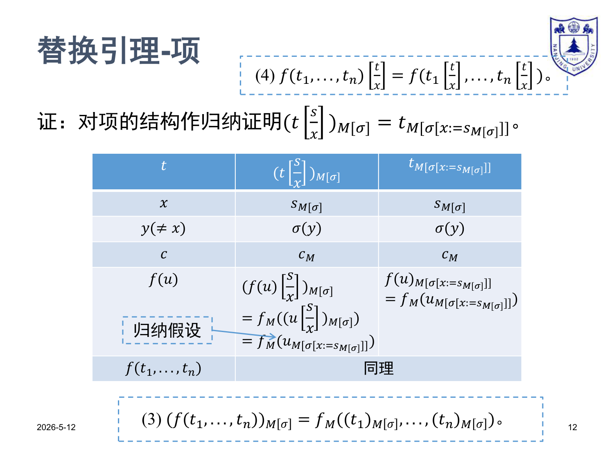
完整归纳表
t | (t[s/x])_M[σ] | t_M[σ[x:=s_M[σ]]] |
|---|---|---|
x |
(x[s/x])_M[σ] = s_M[σ] |
σ[x:=s_M[σ]](x) = s_M[σ] ✓ |
y (≠x) |
(y[s/x])_M[σ] = y_M[σ] = σ(y) |
σ[x:=s_M[σ]](y) = σ(y)（因 y ≠ x）✓ |
c |
(c[s/x])_M[σ] = c_M[σ] = c_M |
c_M[σ[x:=s_M[σ]]] = c_M ✓ |
f(u) |
(f(u)[s/x])_M[σ] = (f(u[s/x]))_M[σ] = f_M( (u[s/x])_M[σ] ) = f_M( u_M[σ[x:=s_M[σ]]] ) 【IH 用在 u 上】 |
f(u)_M[σ[x:=s_M[σ]]] = f_M(u_M[σ[x:=s_M[σ]]]) ✓ |
f(t₁,…,tₙ) |
(f(t₁,…,tₙ)[s/x])_M[σ] = (f(t₁[s/x],…,tₙ[s/x]))_M[σ] = f_M( (t₁[s/x])_M[σ],…,(tₙ[s/x])_M[σ] ) = f_M( (t₁)_M[ρ],…,(tₙ)_M[ρ] ) 【对每个 tᵢ 用 IH，ρ=σ[x:=s_M[σ]]】 |
f(t₁,…,tₙ)_M[ρ] = f_M((t₁)_M[ρ],…,(tₙ)_M[ρ]) ✓ |
f(u)（一元）代表归纳步的核心思路，最后一行 f(t₁,…,tₙ) 写"同理"。我们这里把多元情况也写出来——本质就是逐个分量分别用 IH，没有新东西。归纳证毕。 □
13–14. 替换引理 · 公式版本（引理 3.25）
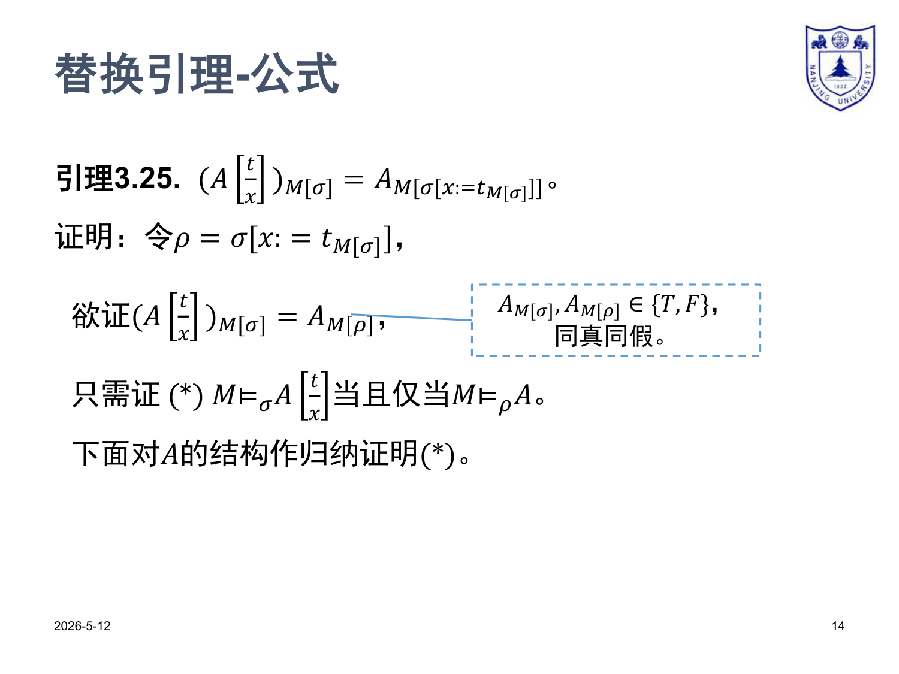
引理 3.25
白话：和引理 3.24 一模一样的等式，只是把项 t（结果是 M 中元素）换成公式 A（结果是 T/F）。先句法替换再算真值 = 先解释项再修改赋值再算真值。
证明策略
- 令
ρ = σ[x := t_M[σ]]，目标变成(A[t/x])_M[σ] = A_M[ρ]。 - 两边取值都在
{T, F}中，所以只需证两边同真同假：
接下来对公式 A 的结构作归纳证明 (*)。分 7 个情况。
因为
M ⊨_σ B 的展开形式是一个逻辑命题（"对所有 / 存在 …"、"… 且 …"），可以用归纳假设直接打通；而 B_M[σ] = T 是个元素等式，链式 iff 写起来不顺畅。D0 · 公式归纳 7 情况路线图
情况 1：A 为 u ≐ v （原子：等词） ── 用引理 3.24 直接打通
情况 2：A 为 P(t₁,…,tₙ) （原子：关系） ── 同上，分量上用引理 3.24
情况 3：A 为 ¬B （否定） ── 用 IH 翻一下号
情况 4：A 为 B ∧ C （合取） ── 拆两边，各用一次 IH
情况 5：A 为 B ∨ C / B → C （析取/蕴含） ── "同理可证"，略
情况 6：A 为 ∀y.B （全称） ── 三个子情况！
6.1 y = x （绑变元就是 x） ── 用句法替换规则 (5)
6.2 y ≠ x 且 y ∉ FV(t) ── 用规则 (6)
6.3 y ≠ x 且 y ∈ FV(t)（要改名 z） ── 用规则 (7)
情况 7：A 为 ∃y.B （存在） ── "同理可证"，略
15–17. 情况 1：A 为 u ≐ v
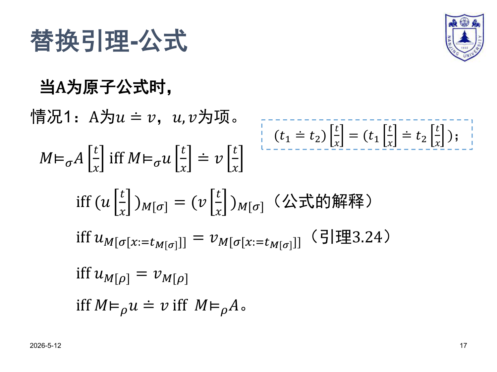
句法规则回顾
链式推演
M ⊨_σ A[t/x] iff M ⊨_σ (u[t/x] ≐ v[t/x]) （句法替换规则 (1)） iff (u[t/x])_M[σ] = (v[t/x])_M[σ] （公式解释：≐ 取 T iff 左右解释相等） iff u_M[σ[x:=t_M[σ]]] = v_M[σ[x:=t_M[σ]]] （引理 3.24，左右各一次） iff u_M[ρ] = v_M[ρ] （记号：ρ = σ[x:=t_M[σ]]） iff M ⊨_ρ (u ≐ v) （公式解释，反着读） iff M ⊨_ρ A
18–19. 情况 2：A 为 P(t₁,…,tₙ)
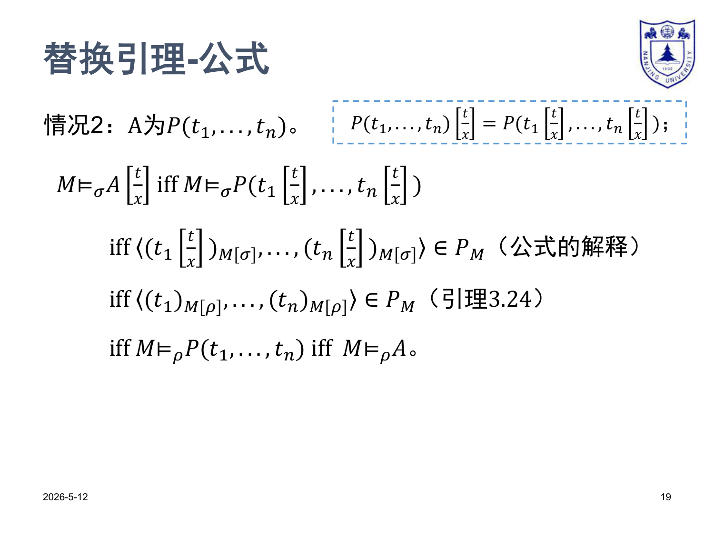
句法规则回顾
链式推演
M ⊨_σ A[t/x] iff M ⊨_σ P(t₁[t/x],…,tₙ[t/x]) （句法替换规则 (2)） iff ⟨(t₁[t/x])_M[σ],…,(tₙ[t/x])_M[σ]⟩ ∈ P_M （公式解释：关系原子查 P_M） iff ⟨(t₁)_M[ρ],…,(tₙ)_M[ρ]⟩ ∈ P_M （对每分量用引理 3.24） iff M ⊨_ρ P(t₁,…,tₙ) iff M ⊨_ρ A
和情况 1 几乎一样，只是把"二元等"换成"n 元元组属于关系"。
20–22. 情况 3：A 为 ¬B
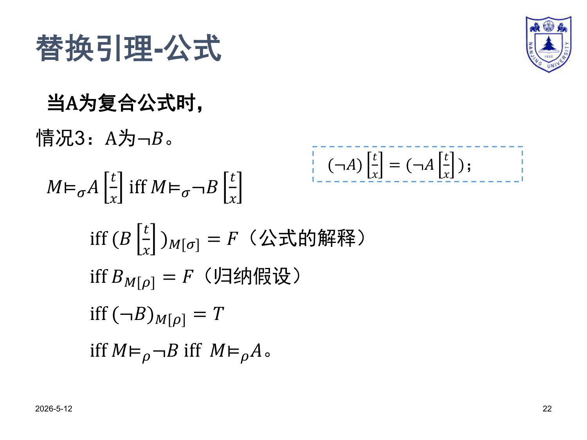
句法规则回顾
链式推演
M ⊨_σ A[t/x] iff M ⊨_σ ¬(B[t/x]) （句法替换规则 (3)） iff (B[t/x])_M[σ] = F （公式解释：¬B 真 iff B 假） iff B_M[ρ] = F （归纳假设：B 上引理 3.25 成立） iff (¬B)_M[ρ] = T iff M ⊨_ρ ¬B iff M ⊨_ρ A
B 比 A 更"简单"（结构小一层），按结构归纳法 B 上已经有结论，可以直接用。23–25. 情况 4：A 为 B ∧ C（含情况 5 略证）
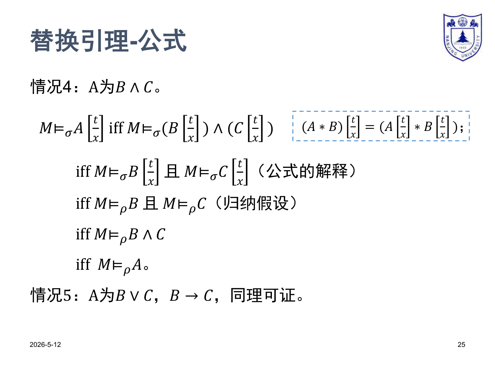
句法规则回顾
链式推演（取 * = ∧）
M ⊨_σ A[t/x] iff M ⊨_σ (B[t/x]) ∧ (C[t/x]) （句法替换规则 (4)） iff M ⊨_σ B[t/x] 且 M ⊨_σ C[t/x] （公式解释：∧ 真 iff 两边都真） iff M ⊨_ρ B 且 M ⊨_ρ C （对 B 和 C 各用一次 IH） iff M ⊨_ρ B ∧ C iff M ⊨_ρ A
情况 5（∨ / →）
同理。把"且"换成"或" / "如果…那么…"即可，结构完全一样。略。
E0 · ∀ 三个子情况为什么必须这样分
核心问题
要证 (∀y.B)[t/x] 的语义等于 (∀y.B)_M[ρ]，其中 ρ = σ[x:=t_M[σ]]。
句法层的替换规则在 ∀y.B 上 分三种情况 给出不同的"重写结果"——所以语义证明必须 分三种情况 分别打通。
| 子情况 | 句法替换给出 | 语义证明的关键工具 |
|---|---|---|
6.1 y = x（绑变元恰是要替换的 x） |
(∀x.B)[t/x] = ∀x.B替换无效（x 已被 ∀x 绑死） |
论证 σ[x:=a] = ρ[x:=a] —— 后续 ∀x 又覆盖了 ρ 在 x 处的值 |
6.2 y ≠ x 且 y ∉ FV(t)（无冲突） |
(∀y.B)[t/x] = ∀y.(B[t/x])直接钻进去 |
用引理 3.17（真值只依自由变元）把 t_M[σ[y:=a]] = t_M[σ]；再交换两个 update 的顺序 |
6.3 y ≠ x 且 y ∈ FV(t)（冲突！要捕获了） |
(∀y.B)[t/x] = ∀z.(B[z/y])[t/x]z 是全新变元 |
先用 6.2 把 ∀z 处理掉（因 z 不冲突），再用 IH 处理 B[z/y] |
26–27. 情况 6.1：y = x
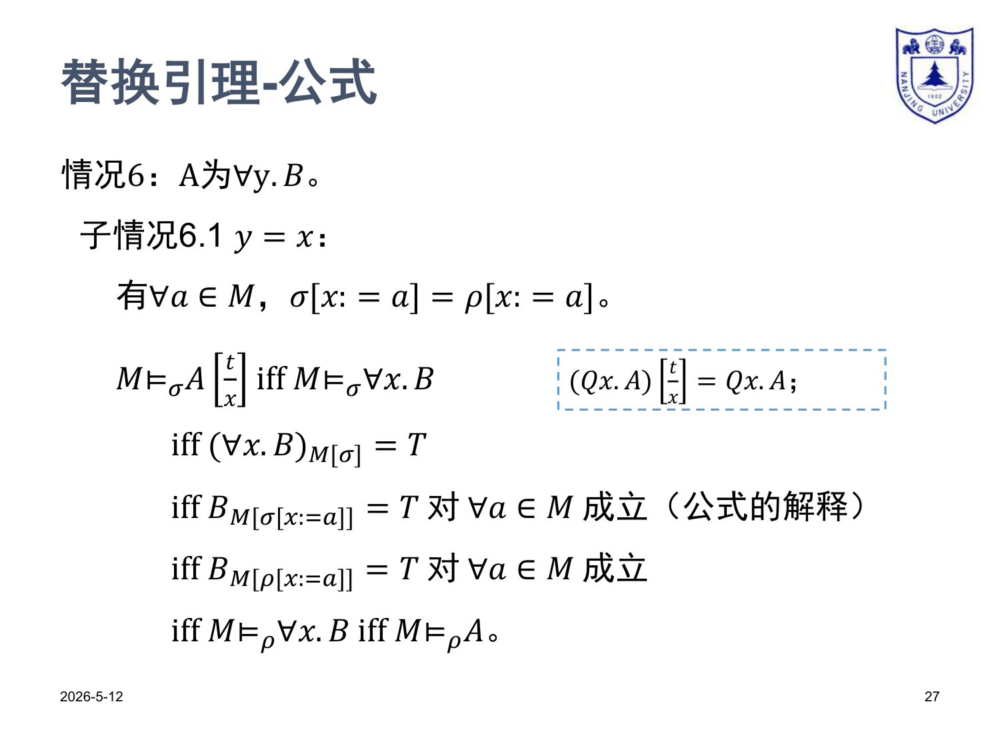
子情况：A 是 ∀x.B（绑变元恰是要替换的 x）。
关键观察
因为 ρ 仅在 x 处与 σ 不同，但 [x:=a] 又把 x 处覆盖了。
链式推演（句法规则 (5)：(∀x.B)[t/x] = ∀x.B）
M ⊨_σ A[t/x] iff M ⊨_σ ∀x.B （句法替换规则 (5)，未发生替换） iff (∀x.B)_M[σ] = T iff B_M[σ[x:=a]] = T 对所有 a ∈ M （公式解释：∀ 展开） iff B_M[ρ[x:=a]] = T 对所有 a ∈ M （关键观察：σ[x:=a] = ρ[x:=a]） iff M ⊨_ρ ∀x.B iff M ⊨_ρ A
28–29. 情况 6.2：y ≠ x 且 y ∉ FV(t)
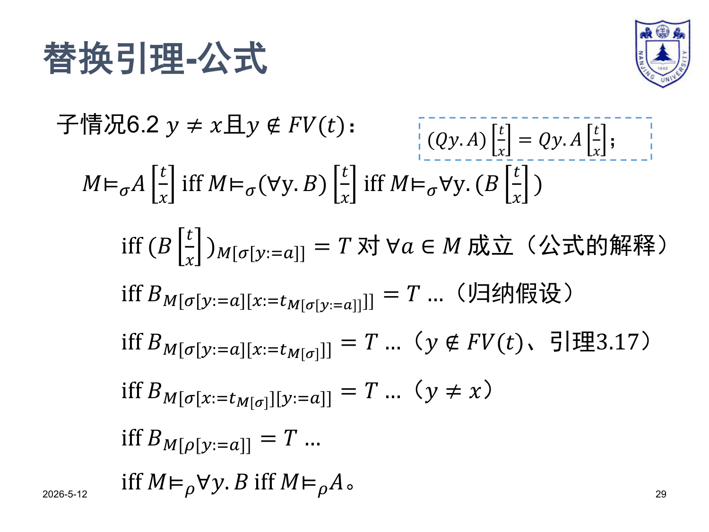
子情况：A 是 ∀y.B，y 不是 x，且 t 里没有自由的 y（无冲突）。
句法规则 (6)
链式推演
M ⊨_σ A[t/x] iff M ⊨_σ ∀y.(B[t/x]) （规则 (6)） iff (B[t/x])_M[σ[y:=a]] = T 对所有 a ∈ M （公式解释：∀ 展开） iff B_M[ σ[y:=a][x := t_M[σ[y:=a]]] ] = T 对所有 a （IH：B 上 3.25 成立） iff B_M[ σ[y:=a][x := t_M[σ]] ] = T 对所有 a （y ∉ FV(t)、引理 3.17：t 不依赖 y） iff B_M[ σ[x := t_M[σ]][y:=a] ] = T 对所有 a （y ≠ x：两 update 可交换） iff B_M[ ρ[y:=a] ] = T 对所有 a ∈ M （记号 ρ） iff M ⊨_ρ ∀y.B iff M ⊨_ρ A
三个关键步骤
- IH：把
B[t/x]在σ[y:=a]下的真值，搬到 B 在「σ[y:=a] 再 update x」下的真值。 - 引理 3.17：「公式 / 项的真值只依赖于自由变元」。因
y ∉ FV(t)，改 σ 在 y 处的值不影响 t 的解释，故t_M[σ[y:=a]] = t_M[σ]。 - update 交换：当
y ≠ x时，σ[y:=a][x:=b] = σ[x:=b][y:=a]（两 update 独立）。
30–32. 情况 6.3：y ≠ x 且 y ∈ FV(t)
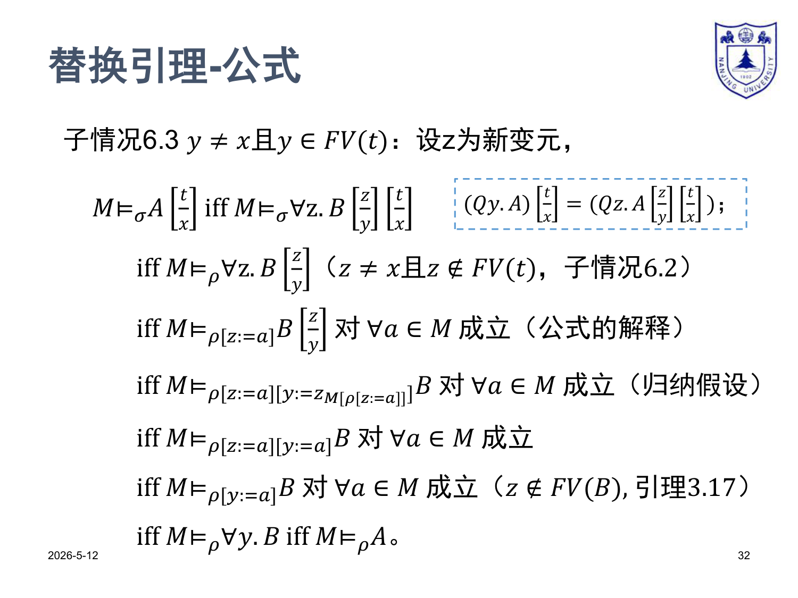
子情况：A 是 ∀y.B，y 不是 x，且 t 里有自由的 y —— 直接钻进去会"捕获"。
句法规则 (7)
链式推演
M ⊨_σ A[t/x] iff M ⊨_σ ∀z.(B[z/y])[t/x] （规则 (7)） iff M ⊨_ρ ∀z.(B[z/y]) （用情况 6.2：z ≠ x 且 z ∉ FV(t)，符合 6.2 前提） iff (B[z/y])_M[ρ[z:=a]] = T 对所有 a ∈ M （公式解释：∀ 展开） iff B_M[ ρ[z:=a][y := z_M[ρ[z:=a]]] ] = T 对所有 a （IH：B 上 3.25 成立，把 z 当作"t"，y 当作"x"） iff B_M[ ρ[z:=a][y := a] ] = T 对所有 a （z_M[ρ[z:=a]] = ρ[z:=a](z) = a） iff B_M[ ρ[y := a] ] = T 对所有 a （z ∉ FV(B)、引理 3.17：z 上的修改对 B 真值无影响） iff M ⊨_ρ ∀y.B iff M ⊨_ρ A
- 句法层先把
∀y改名成∀z（z 全新）； - 用 6.2（合法因为 z 不冲突）把外层
[t/x]处理掉； - 再用 IH 把内层
[z/y]处理掉； - 用引理 3.17 把临时引入的 z 抹掉。
F0 · 变量捕获 —— 为什么 6.3 必须改名
反例（最简单的）
考虑公式 A = ∃y.(¬(x ≐ y))，意思是"存在某个 y 不等于 x"。在论域至少有 2 个元素的结构里这是永真的。
现在做替换 A[y/x]，即把 x 替换成项 y。
- 正确做法（按规则 (7)，因为
y ∈ FV(t) = FV(y) = {y}）：先改名∃y → ∃z，得到∃z.(¬(x ≐ z))，再替换x → y，结果∃z.(¬(y ≐ z))—— 意思是"存在某个 z 不等于 y"，仍然永真。 ✓ - 错误做法（违反 (7)，直接套规则 (6)）：得到
∃y.(¬(y ≐ y))—— 意思是"存在某个 y 不等于自己"，永假！
为什么语义证明里 6.3 一定要改名？
因为只有改了名（z 不在任何地方冲突），我们才能调用情况 6.2 + IH 这两个工具；不改名的话，量词上的赋值修改 σ[y:=a] 会作用到 t 的解释上（因为 y ∈ FV(t)），引理 3.17 那一步就跨不过去了。
33. 情况 7：A 为 ∃y.B，同理可证 □
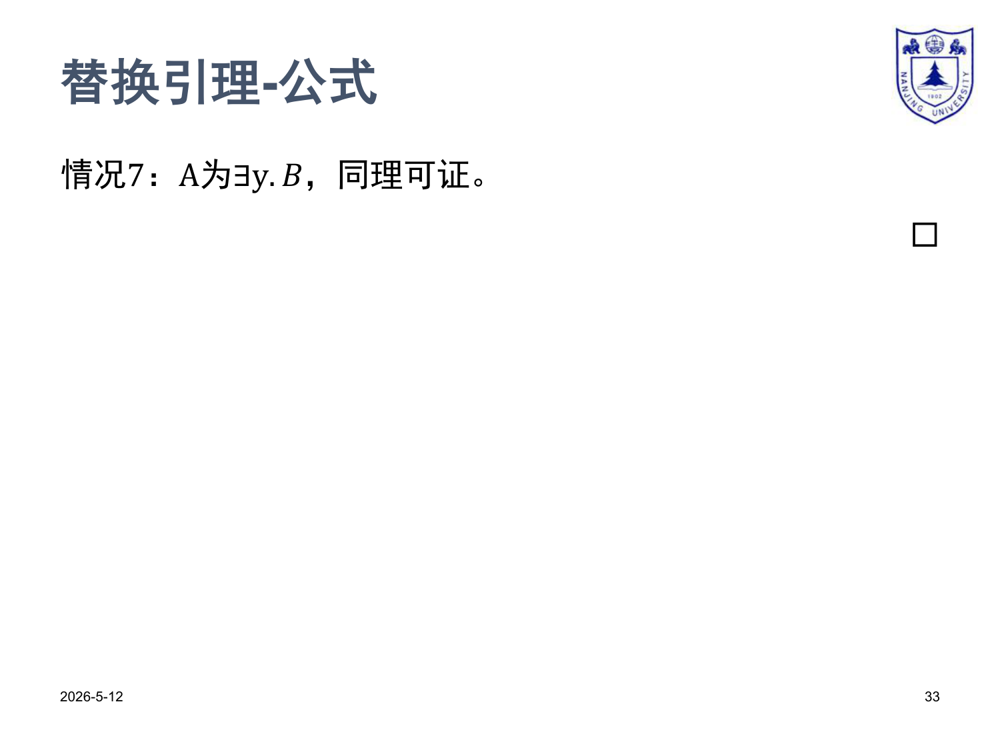
对偶：∃ 和 ∀ 是对偶的——前者要求"存在 a"，后者要求"对所有 a"。证明结构完全一样，把"对所有 a 真"换成"存在某个 a 真"即可。三个子情况 7.1 / 7.2 / 7.3 与 6.1 / 6.2 / 6.3 完全平行。
关键一行（让你看个意思）
M ⊨_σ (∃y.B)[t/x] → ...（按 7.1 / 7.2 / 7.3 分支，各调对应工具）... → 存在 a ∈ M 使 B_M[ρ[y:=a]] = T iff M ⊨_ρ ∃y.B
至此 7 种情况全部走完。引理 3.25 证毕。 □
34. 推论：⊨ ∀x.A → A[t/x]
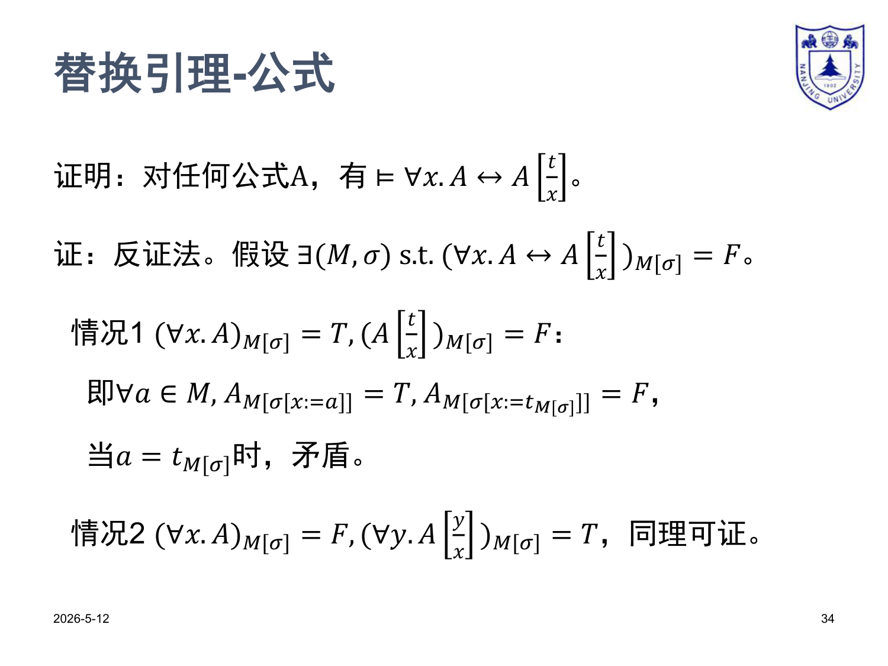
命题
对任何公式 A、项 t、变元 x：
即：在任何结构 (𝕄, σ) 下，(∀x.A → A[t/x])_M[σ] = T。
证明（反证法）
假设存在 (𝕄, σ) 使 (∀x.A → A[t/x])_M[σ] = F。由蕴含的真值条件：
(∀x.A)_M[σ] = T，且(A[t/x])_M[σ] = F。
情况 1（PDF 写出的）
展开：
(∀x.A)_M[σ] = T意味着对所有a ∈ M，A_M[σ[x:=a]] = T。(A[t/x])_M[σ] = F，由引理 3.25，等于A_M[σ[x:=t_M[σ]]] = F。
取 a = t_M[σ]（论域里一个具体元素），第一条给出 A_M[σ[x:=t_M[σ]]] = T，第二条给出 = F，矛盾。
情况 2（PDF 写"同理可证"）
情况 1 已经完整覆盖了反证假设。PDF 那一句"同理可证"是对替换的另一种代换记号写法（把 x 改作 y）的对偶分析，本质就是上面这一句话。证毕。 □
Γ ⊨ ∀x.A，立即得到 Γ ⊨ A[t/x]（对任何 t）。G0 · 收尾 · 第 9 章预告
第 9 章会引入一阶量词的引入 / 消除规则
∀⁻ (全称消去): ∀x.A
─────────
A[t/x]
∃⁺ (存在引入): A[t/x]
─────────
∃x.A
∀⁺ (全称引入)、∃⁻ (存在消除)：另有"特征变元"侧条件
这些规则的可靠性证明（"语法上能推出的，语义上一定成立"）几乎全部直接调用引理 3.25
∀⁻的可靠性 = 推论 p34；∃⁺的可靠性 = p34 的对偶；∀⁺、∃⁻的可靠性还要配合引理 3.17 处理"特征变元不在自由变元中"那条侧条件。
一句话总结全章
没有它，一阶逻辑的可靠性 / 完备性证明都迈不开第一步。